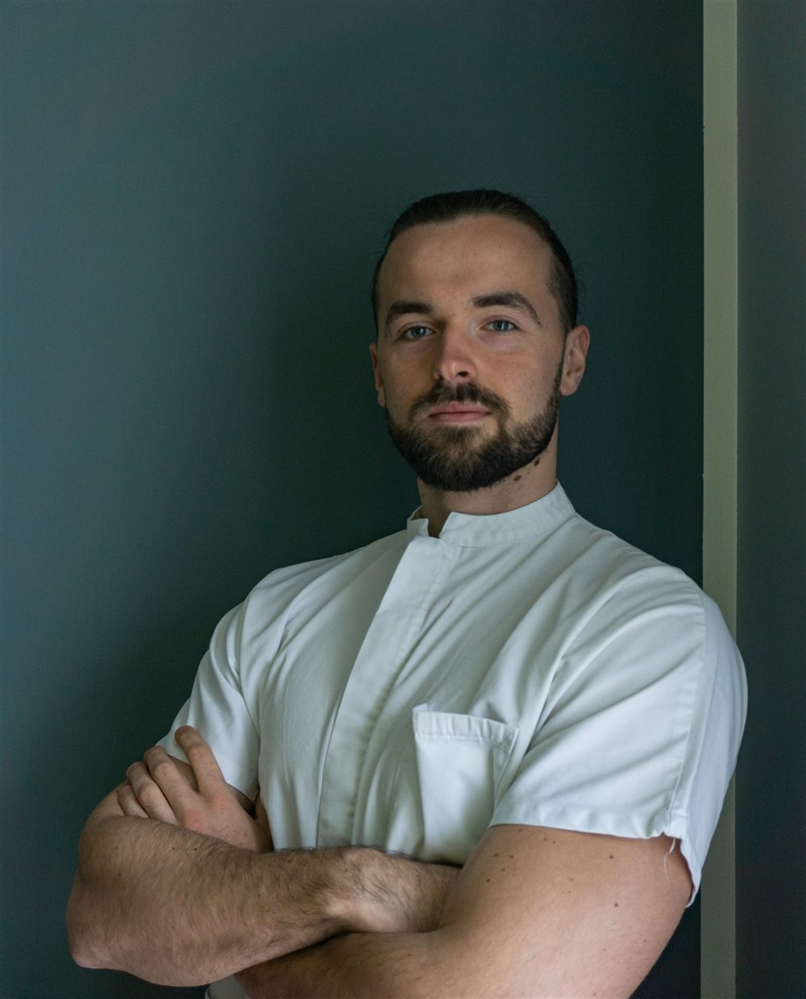

Kamil Gontarski, fisioterapista

Sono un fisioterapista specializzato nel trattamento delle problematiche muscolo-scheletriche, con un percorso formativo e professionale rivolto alla riabilitazione e alla cura della persona.
Ho conseguito la Laurea in Fisioterapia presso l'Università degli Studi di Milano e sto attualmente completando il Master in Fisioterapia Applicata allo Sport e alle Attività Artistiche presso l'Università degli Studi di Siena, un percorso di specializzazione dedicato alla valutazione e al trattamento delle problematiche dello sportivo.
Nella mia attività professionale seguo atleti amatoriali e agonisti, offrendo percorsi di recupero e prevenzione personalizzati in base alle esigenze specifiche di ciascun paziente. Collaboro con centri di fisioterapia domiciliare, offrendo un servizio direttamente presso il domicilio dei pazienti, e sono il fisioterapista dell'ASD Argonese C5, squadra militante in Serie B, occupandomi della gestione fisica degli atleti nel corso dell'intera stagione sportiva.
Il mio approccio professionale unisce aggiornamento continuo ed esperienza clinica, con l'obiettivo di proporre percorsi di cura sicuri e costruiti su misura per ogni singolo paziente.
Formazione ed esperienza
Formazione
Master in Fisioterapia Applicata allo Sport e alle Attività Artistiche
Università di Siena — da marzo 2026 (in corso)
Laurea in Fisioterapia
Università degli Studi di Milano — 2021–2024
Esperienza professionale
Fisioterapista — ASD Argonese C5
Collaborazione con squadra professionistica di calcio a 5, militante in Serie B — dal 2025
Fisioterapista domiciliare
Collaborazione con centri convenzionati — dal 2025
Fisioterapia ambulatoriale
Presso studio a Trescore Balneario (BG) — dal 2025
Parliamo della tua situazione
Prenota una prima visita per una valutazione approfondita, oppure scrivimi per qualsiasi domanda.